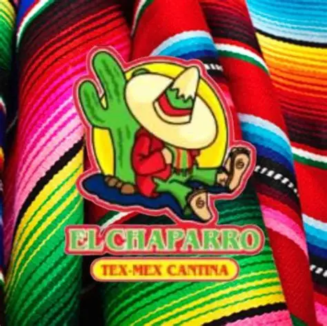
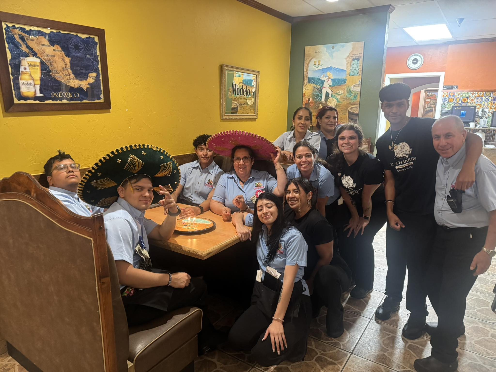
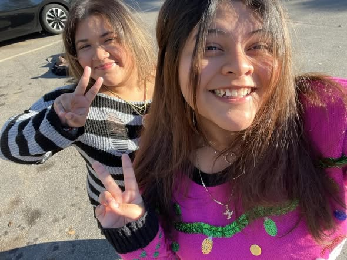
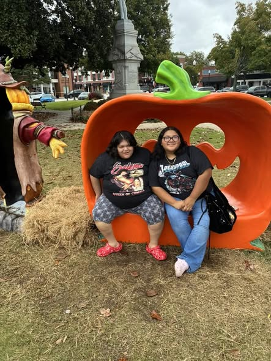
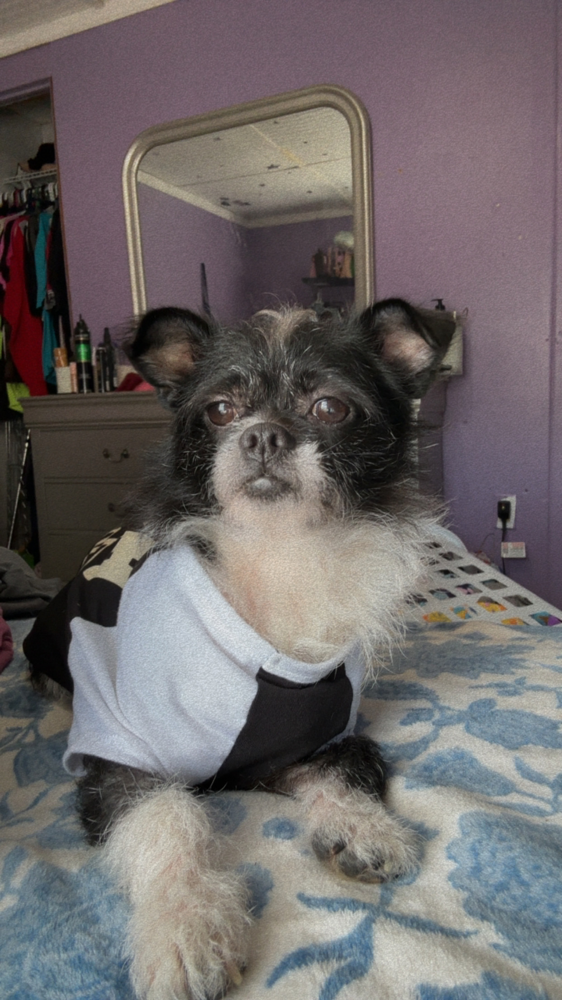

Hi there! My name is Xiomara, and I’m so excited you’re here. This page is a little window into who I am, the things I enjoy, and what inspires me. I love sharing my interests, ideas, and the things that make me, me. So take a look around, get to know me better, and enjoy learning a bit about my world!
I’m a 19-year-old college student attending the University of Advancing Technology online.
I really do like the whole experience I’ve been having throughout my college weeks. My professors are very nice and I actually enjoy what I’m learning even though it could be a little bit stressful I do like it.
The degree I’m working for is called Advertising Art degree. It might be my first year but right now I will say everything is going really smoothly and I’m liking it so far.
I also work I work as a hostess /cashier at a Mexican restaurant called El Chaparro
They actually say it’s the best number one Mexican restaurant an my city (Covington ga) I’ve been working there for the past 2 to 3 years now and I like it. It’s really nice. The environment is very nice and I have made some good friends.
I really enjoy working at El Chaparro. The staff is friendly, and the atmosphere is lively. Plus, I get to meet a lot of interesting people!
I like to believe I’m a family person. I’m pretty close to my family, my mom and dad, and my sister, my older brother, and I’m very close to one of my cousin, Jenny. I love them all and I always try to spend as much time with my cousin, I consider her a very good and even my best friend. She’s like a sister to me. (jenny is the one with pink and im the one with gray)
I also love my sister Samantha.She is younger than me by two years, but she is such a sweetheart and a goofball.Family means everything to me, and I cherish the moments we share together.I always look forward to spending time with them.
I also have a dog his name is Merlin. He’s a Chihuahua mix with. I’m not sure what but he’s super funny very hyper and just a silly little dog overall.
